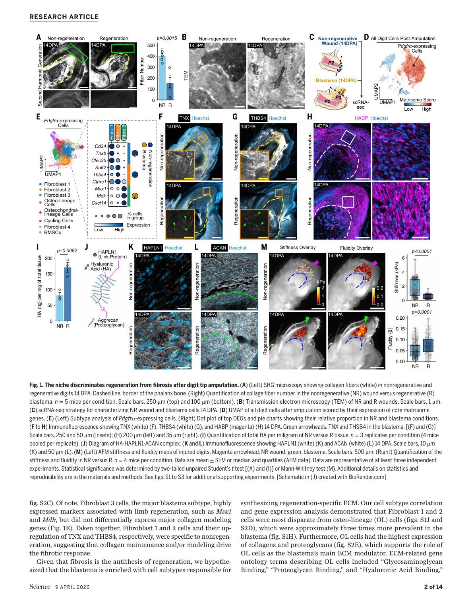
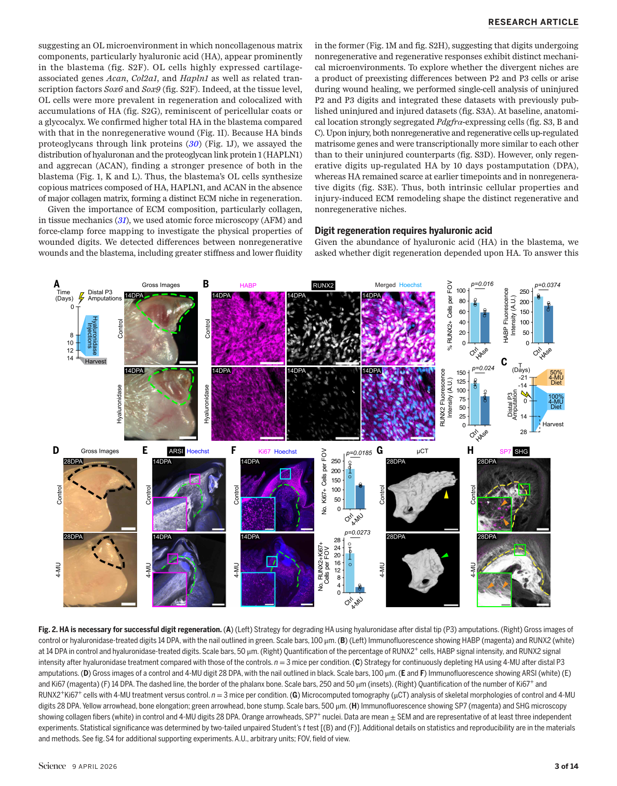
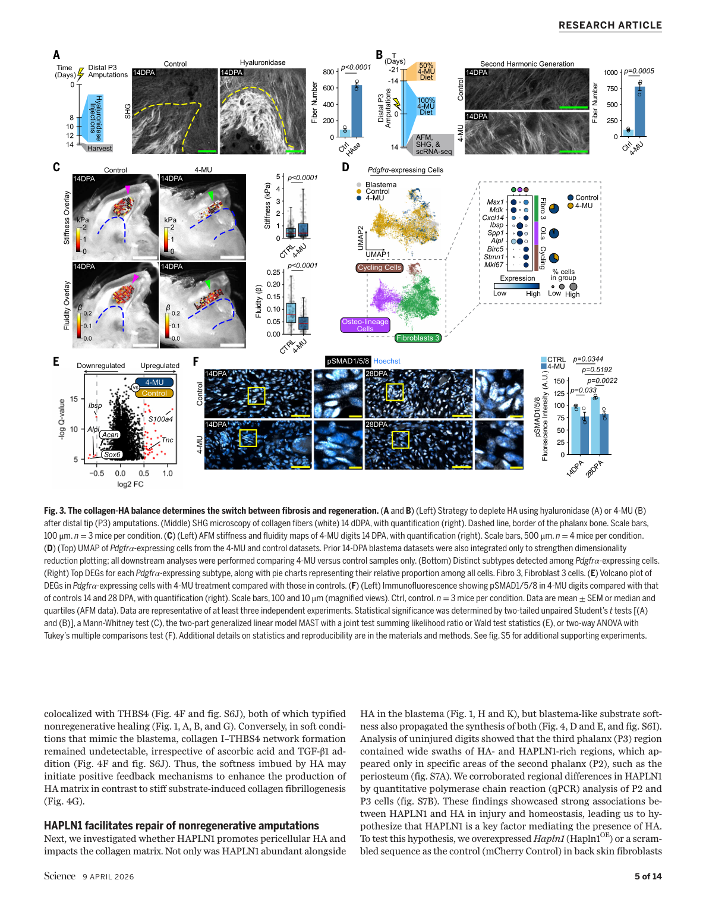
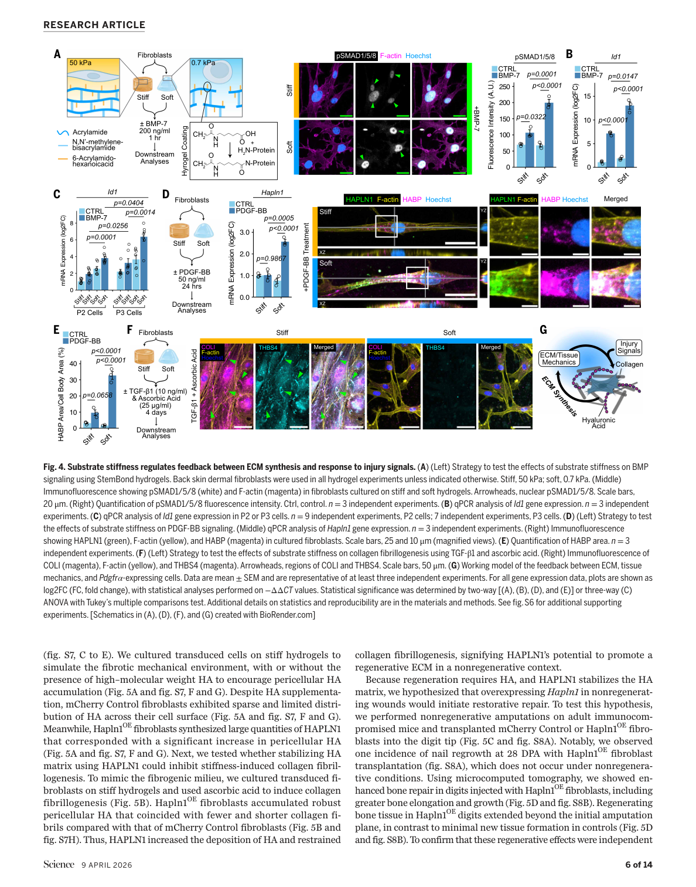
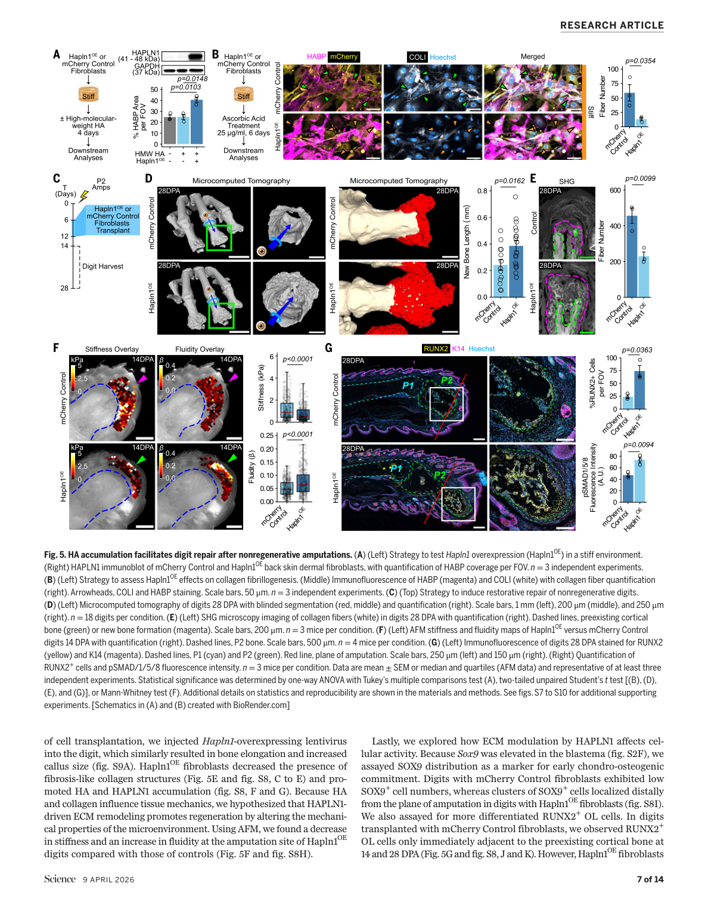

本文献笔记由 Claudian 自动生成，元数据已同步至 Zotero (ItemID: 1879)
一、研究背景与科学问题#
疾病/生物学背景#
哺乳动物的肢体再生能力极为有限，大多数组织损伤后以纤维化瘢痕（fibrosis）愈合，而非功能性组织再生。指端（digit tip）是一个罕见的例外——当截肢位于指甲（nail）以远区域时，小鼠的指骨和软组织可以完全再生；而截肢位置超过指甲区域时，伤口仅形成瘢痕，无法再生。这种位置依赖性的再生差异提示局部微环境（microenvironment）在决定再生命运中发挥关键作用，但其机制尚未被完全解析。
科学问题#
- 是什么分子/结构因素决定了再生区与非再生区截然不同的修复结局？
- 细胞外基质（ECM）的力学特性（硬度/软度）如何影响细胞行为和修复信号通路？
- 能否通过人为干预ECM组成/力学特性，将非再生区域转化为可再生状态？
核心假说#
透明质酸（Hyaluronic Acid, HA）与胶原的比例决定了局部组织的力学环境（软 vs. 硬），从而通过调控细胞行为决定再生 vs. 纤维化的命运抉择。
二、整体研究思路#
小鼠指端截肢模型
│
├── 再生区（nail distal, ND）截肢 → 完整再生
└── 非再生区（mid-phalanx, P2）截肢 → 瘢痕愈合
│
▼
ECM 组学比较（再生 vs. 非再生）
├── 蛋白质组（胶原、HA、蛋白聚糖）
├── 力学测量（AFM → 组织刚度）
└── RNA-seq / ATAC-seq
│
▼
候选分子：透明质酸（HA）富集于再生区
│
▼
功能验证
├── HA 耗竭实验 → 抑制再生
└── HAPLN1 稳定HA实验 → 促再生、抑瘢痕
│
▼
机制解析
├── HA-力学-YAP/TAZ 信号
├── ECM 力学与F-actin细胞骨架
└── 成骨分化（骨修复）
三、主要结果#
Result 1：再生区与非再生区的 ECM 组成差异#
- 核心发现：再生区富含透明质酸（HA），非再生区富含有序排列的致密胶原
- 主要证据：
- 蛋白质组学（proteomics）比较 ND vs. P2 区段：再生区HA合成酶（HAS1/2/3）和透明质酸结合蛋白显著富集
- 非再生区（P2）胶原（尤其是Collagen I/III）密度高、排列有序；再生区胶原松散、随机排列
- 阿尔新蓝（Alcian Blue）染色确认再生区胞外HA沉积显著高于非再生区
- 意义：首次系统性揭示了再生能力的ECM分子基础，HA是再生微环境的关键组分
Result 2：组织力学特性决定再生命运#
- 核心发现：再生区组织柔软（非再生区的1/5硬度），软环境促进再生
- 主要证据：
- AFM（原子力显微镜）测量：杨氏模量再生区 ~1 kPa，非再生区 ~5-10 kPa
- 软基质（~1 kPa）培养 MSC：YAP/TAZ 核定位降低，促进软骨/骨分化
- 硬基质（~10 kPa）培养 MSC：YAP/TAZ 核内积累，促纤维化表型
- 意义：**组织刚度（tissue stiffness）**是独立于生化信号的物理调控因子，可直接决定干细胞命运
Result 3：HA 耗竭抑制再生并促进纤维化#
- 核心发现：特异性降解HA（用 hyaluronidase）完全阻断指端再生，转变为瘢痕愈合
- 主要证据：
- 局部注射 hyaluronidase 至再生区：骨再生面积减少 >80%，软组织再生缺失
- Masson三色染色：对照组正常再生结构 → HA耗竭组广泛胶原沉积（瘢痕）
- F-actin 染色：HA耗竭后细胞骨架重塑，细胞铺展面积增大（硬组织特征）
- 意义：HA不仅是再生区"软"环境的标志物，更是再生所必需的功能性组分
Result 4：HAPLN1 稳定HA并重塑ECM力学#
- 核心发现：HAPLN1（Hyaluronan and Proteoglycan Link Protein 1）通过稳定HA网络，软化非再生区ECM并促进再生
- 主要证据：
- P2截肢后局部给予HAPLN1蛋白：ECM刚度从 ~8 kPa 降至 ~2 kPa（接近再生区）
- HAPLN1处理组：骨再生显著增强（μCT定量），软组织结构接近天然指端
- 胶原纤维排列改善：从有序致密（瘢痕型）转变为随机松散（再生型）
- 意义：ECM可被人工重塑——非再生区通过外源HAPLN1补充可转变为再生表型
Result 5：机制——HA-力学-YAP/TAZ-F-actin 信号轴#
- 核心发现：HA通过维持软组织力学抑制YAP/TAZ核转位，进而调控细胞骨架和分化方向
- 主要证据：
- HA缺失 → YAP/TAZ核内积累（硬组织信号激活）
- HAPLN1处理 → YAP/TAZ细胞质定位（软组织信号）
- F-actin 应力纤维：HA缺失后显著增加（硬组织特征）；HAPLN1处理后减少
- YAP 抑制（verteporfin处理）可部分 rescue HA缺失导致的纤维化表型
- 意义：建立了ECM力学-细胞骨架-YAP/TAZ-基因表达的完整信号轴，解释了力学信号如何转化为分子/细胞命运决定
Result 6：HAPLN1 治疗促进骨修复的量化证据#
- 核心发现：HAPLN1处理的非再生区截肢，骨体积/总面积（BV/TV）和骨密度接近自然再生水平
- 主要证据：
- μCT 三维重建：HAPLN1组BV/TV恢复至对照的 ~80%，对照组仅 ~20%
- 组织学切片：HAPLN1组骨陷窝（lacunae）和软骨内成骨结构正常；对照组大量纤维组织填充骨髓腔
- 纵向追踪（8周）：HAPLN1组骨结构持续改善，无纤维化复发
- 意义：HAPLN1具有临床转化价值，可作为ECM力学调节剂促进难愈合骨折的修复
Result 7：跨物种保守性与治疗广谱性#
- 核心发现：HA富集是哺乳动物指端再生的保守特征，HAPLN1策略在多种损伤模型中有效
- 主要证据：
- 比较多种哺乳动物（人、灵长类、小鼠）再生区ECM：HA富集模式高度保守
- 在皮肤伤口模型（非骨损伤）中：HAPLN1局部给药同样减少瘢痕宽度
- 人胎儿皮肤来源的成纤维细胞：HAPLN1处理后ECM刚度降低，干性基因表达上调
- 意义：ECM靶向策略具有跨组织、跨物种的普适性，为再生医学提供了新的通用思路
四、机制模型#
文字流程图#
再生区（nail distal）
│
├── HA 高表达 → ECM 柔软（~1 kPa）
├── HAS（透明质酸合成酶）活化
├── YAP/TAZ 细胞质定位（抑制）
└── F-actin 松散 → MSC/祖细胞 → 软骨/骨分化 → 再生
非再生区（mid-phalanx, P2）
│
├── 胶原高表达（致密有序） → ECM 坚硬（~5-10 kPa）
├── HA 相对低表达
├── YAP/TAZ 核内积累（激活）
├── F-actin 应力纤维 → 成纤维细胞 → 纤维化
└── 结果：瘢痕愈合
干预策略（HAPLN1）
│
├── HAPLN1 稳定HA网络
├── ECM 刚度降低（8 kPa → 2 kPa）
├── YAP/TAZ 重新入胞质
└── 非再生区 → 转变为再生表型
治疗转化模型#
临床问题：非再生区骨折/截肢 → 瘢痕/不愈合
│
▼
干预手段：局部给予 HAPLN1 蛋白（或基因治疗）
│
▼
ECM 重塑：HA网络稳定 + 胶原结构改善 → 组织软化
│
▼
细胞响应：YAP/TAZ失活 + F-actin松弛 → 干细胞再生程序激活
│
▼
组织结局：骨修复增强 + 瘢痕减少 → 功能性再生
五、讨论与结论#
核心发现#
- HA是哺乳动物指端再生的关键决定因子：在再生区高度富集，通过维持ECM柔软状态（低刚度）促进再生
- ECM力学是独立的命运决定信号：通过YAP/TAZ机械感受通路，物理特性可直接转化为基因表达改变
- HAPLN1是ECM力学的有效调节剂：在非再生区施加后，可重现再生微环境，实现功能性组织修复
- ECM靶向策略具有转化潜力：不针对特定基因或信号通路，而是重塑整个组织力学微环境
研究亮点#
- ✅ 领域创新：首次将ECM组成/力学与哺乳动物指端再生的位置依赖性直接关联
- ✅ 机制完整：建立了 HA→ECM刚度→YAP/TAZ→F-actin→细胞命运 的完整信号轴
- ✅ 干预验证：HAPLN1实现了从"非再生"到"再生"的表型转换，转化意义明确
- ✅ 跨物种保守性：在人多组织验证了策略的普适性
- ✅ 技术整合：整合了蛋白质组学、AFM力学测量、μCT、RNA-seq等多种手段
研究局限性#
- ⚠️ 物种转化：小鼠指端再生能力在人类中相对有限，需在大型动物模型中进一步验证
- ⚠️ 长期安全性：HAPLN1的长期给药安全性、剂量优化和免疫原性尚未系统评估
- ⚠️ 机制深度：YAP/TAZ下游的直接靶基因（驱动再生程序的关键转录因子）尚不明确
- ⚠️ 完整再生：HAPLN1处理后的非再生区，再生质量是否100%等同于自然再生区仍有待验证
- ⚠️ 瘢痕复杂微环境：病理性瘢痕（如挛缩瘢痕、增生性瘢痕）的ECM异常可能更顽固，HAPLN1单独使用可能不足
关键图表 (Figure 1-5)#
以下为论文原图，按研究逻辑顺序排列
Figure 1 | The niche discriminates regeneration from fibrosis#

图注： Fig. 1. The niche discriminates regeneration from fibrosis after digit tip amputation.
- (A) SHG microscopy showing collagen fibers (white) in nonregenerative and regenerative regions
- (B-O) Multi-panel figure showing ECM composition, cell populations, and gene expression differences between regeneration-competent and fibrosis-prone niches
Figure 2 | HA is necessary for successful digit regeneration#

图注： Fig. 2. HA is necessary for successful digit regeneration.
- (A) Strategy for degrading HA using hyaluronidase after distal tip (P3) amputations
- (B-O) Gross images, histology, and quantification showing HA depletion blocks regeneration and promotes fibrosis
Figure 3 | The collagen-HA balance determines fibrosis vs. regeneration#

图注： Fig. 3. The collagen-HA balance determines the switch between fibrosis and regeneration.
- (A) Strategy to deplete HA using hyaluronidase or 4-MU
- (B-L) Viscoelastic properties, AFM measurements, and transcriptomic changes with HA depletion
Figure 4 | Substrate stiffness regulates ECM synthesis and injury response#

图注： Fig. 4. Substrate stiffness regulates feedback between ECM synthesis and response to injury signals.
- (A) Strategy to test effects of substrate stiffness on BMP signaling and HA synthesis
- (B-O) Soft substrates enhance BMP responsiveness, upregulate HAPLN1, and suppress collagen synthesis
Figure 5 | HA accumulation facilitates repair after nonregenerative amputations#

图注: Fig. 5. HA accumulation facilitates digit repair after nonregenerative amputations.
- (A) Strategy for Hapln1 overexpression (Hapln1OE) in stiff nonregenerative environment
- (B-O) HAPLN1 stabilizes HA, reduces fibrosis, promotes osteoblast recruitment, and enhances bone repair
六、参考文献（核心文献）#
Mui BWH et al. Hyaluronic acid and tissue mechanics orchestrate mammalian digit tip regeneration. Science. 2026;392:eady3136. DOI: 10.1126/science.ady3136
Storer MA et al. (2026). HA-TissueMechanics-Science2026. Zenodo. DOI: 10.5281/zenodo.18458384
Simkin J et al. The nail matrix regulates digit tip regeneration via the distal_program. Science. 2024. DOI: 10.1126/science.aba2374
Leight JL et al. Mechanical force sensing and regulation of YAP/TAZ signaling. Trends Cell Biol. 2021. DOI: 10.1016/j.tcb.2021.10.002
Chaudhuri O et al. Hydrogels as extracellular matrix mimics. Nat Rev Mater. 2024. DOI: 10.1038/s41580-024-00716-0
Desmoulière A et al. Apoptosis mediates the decrease in cellularity during transition from granulation tissue to scar. Am J Pathol. 1995;146:56-66. DOI: -
Franze K et al. (2025). Mechanical control of tissue growth during limb regeneration. bioRxiv. DOI: 10.1101/2025.04.07.647008
Swift J et al. Nuclear laminin and chromatin organization regulate YAP/TAZ signaling. Science. 2013. DOI: 10.1126/science.1240104
相关笔记#
- 伤口愈合与再生
- 细胞外基质与组织力学
- YAP/TAZ 机械信号通路
- HAPLN1 与蛋白聚糖